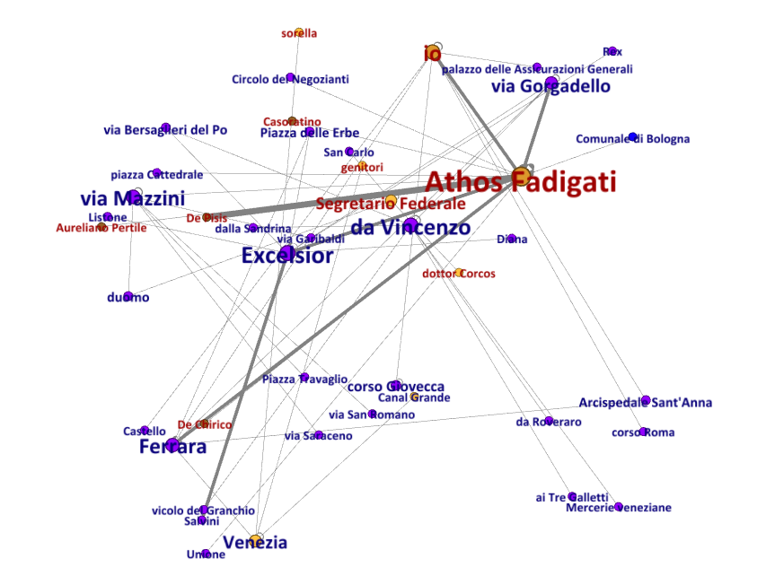
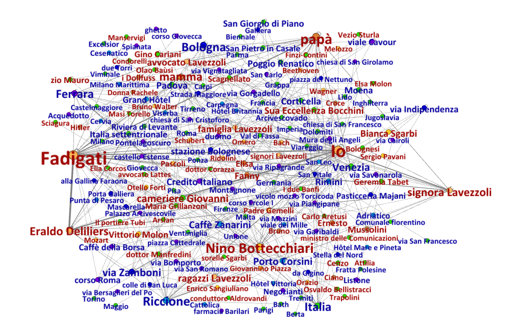

1. Introduction
Gli occhiali d'oro by Giorgio Bassani plays a crucial role within the Italian narrative tradition of the aftermath of the Second World War. The book was published in 1958 and constitutes the second section of the series Il romanzo di Ferrara. As it has been often pointed out (among the others, Ferroni 2013: 77), the author stresses the theme of historical memory and contextualises it within the geographical scenario of the city of Ferrara. The chronotope of the plot is indeed the Emilian city during the late Thirties and, similarly to the masterpiece Il giardino dei Finzi-Contini, describes the difficult situation experienced by Jewish communities in Italy during Fascism. Albeit the novel seems to deepen a crucial theme for the poetics of the author, it also deals with an unprecedented topic: the homophobic discrimination.
The protagonist of Gli occhiali d'oro is indeed Athos Fadigati, a well-known otolaryngologist working in Ferrara. The first chapters of the book are aimed at describing the bourgeois milieu of the small city and to provide the reader a portrait of the doctor. This harmonious balance is however fragile: already at the end of the second chapter a plot twist takes place:
«Non lo sai? Mi risulta che il dottor Fadigati è...» «Sta' a sentire la novità. Conosci mica quel dottor Fadigati, che abita in Gorgadello, quasi all'angolo con Bersaglieri del Po? Ebbene, ho sentito dire che è...»From this moment the reader witnesses an harsher and harsher discrimination towards Fadigati. Indeed, his "inversione sessuale" is radically incompatible with the righteous principle of the Fascist bourgeoisie. This discrimination will progressively exclude and marginalise the protagonist, whose story cannot turn but into a tragedy. In fact, this unbearable burden will force Fadigati to drown himself in the suburbs of Ferrara, at Pontelagoscuro.
The entire story is described from an internal observer, who works as emotive filter on the entire plot. The narrator is indeed a Jewish middle-class young adult (maybe Bassani himself?): this character, however, cannot be identified by a name, as it is referenced quite exclusively by personal pronouns throughout the book. Acerbi and Faré (1966: 185) proposed a valid description of the narratological strategy implemented by Bassani in the book.
A partire da Gli occhiali d'oro si apre la strada del puro intimismo, ponendosi come unico interesse l'analisi delle reazioni psicologiche individuali. La piu significativa innovazione e l'introduzione di un io narrante che, da elemento del coro intorno al dott. Fadigati, si fa personalità di rilievo sempre maggiore in rapporto con il protagonista, e con l'ambiente sociale, e in cui la personalità dell'autore si fonde e si immedesima con quella della sua creatura fantastica. Ne consegue la riduzione dei personaggi a quanto il giovane, che fa da narratore, coglie nel rapporto individuale, senza che questi vengano costruiti per convergenza di più punti di vista [...]. Ma poi il giovane protagonista si fa, da semplice osservatore e testimonio, partecipe del dramma del dottore [...]: è un incontro di perseguitati, per una analogia di condizioni tra il dottore e il giovane ebreo, che si accorge, attraverso i trasalimenti della sua vivissima sensibilita, di essere egli pure condannato ed esiliato dalla vita per la sola colpa di essere d'un'altra stirpe
The entire novel is therefore centered on the theme of the marginalisation and the segregation caused by the Fascist regime. Albeit the plot unfolds in several settings, the tragedy of Fadigati (and of the narrator as well) is mainly framed by the city of Ferrara. This place is treated as a living scenario, continuously shaped by the interaction among the main characters and secondary background. The description of the city in Bassani has a crucial role: already at the first page, each event and character is centered in well defined geographical dimension. This choice allows to track movements and change of habits of different characters along the plot as any micro-story is effectively part of the "romanzo di Ferrara".
2. Methodologies
As highlighted above, Gli occhiali d'oro deals as primary theme the discrimination and the exclusion of the individual from and by its own social class. Indeed, in the novel multiple elements collaborate in depicting the marginalisation of protagonist and of the narrator: the sense of emergination and claustrophobia described at the end of the book is self-evident and can be percieved alredy at a first, naïve reading. The goal of the project is indeed to study how this marginalisation process unfolds during the plot and which axes can be considered as effective paramenter to measure it. The following research question can be formalized:
How can marginalisation be visualized and studied in Bassani's Gli occhiali d'oro?
I. How are the characters connected to each other?
II. How does Fadigati's network change after his outing?
III. How does Fadigati's relationship with the urban space change after his outing?
We do think that studying the marginalization strategies described in the novel can be a useful purpose to better understand the art of Bassani and his cultural milieu as well. The marginalisation of the narrator, "in cui la personalità dell'autore si fonde e si immedesima con quella della sua creatura fantastica", and the insistence of the theme of discrimination within the opera omnia by Bassani (e.g. Giardino dei Finzi-Contini) highlight its crucial role within the poetics of the author. The possibility that this interest could be based on an autobiographical motif encourages this direction of research. Indeed, it has been said that "understanding marginality as position and place of resistance is crucial for oppressed [...] people: [...] these margins have been both sites of repression and sites of resistance" (bell hooks 2015: 232). The research questions want hence to scrutinize how the theme of the margin is dealt by Bassani and which are the strategies implemented to describing the claustrophobic discrimination witnessed by the protagonist and the narrator.
The addressing of these specific goals shaped the purpose of the entire project. Changing Lenses, indeed, can be read as a project of editorialization, defined as the process referring "how tools, emerging practices, and the structures determined by the tools engender a different relationship to the content itself". It also "shapes and structures content in a way that is not limited to a closed, well-defined context (such as a journal) or a group of predetermined individuals (editors and publishers). It involves an opening up of space (several platforms) and time (several different editors unbound by deadlines)" (Vitali-Rosati 2018: 64). The processual nature of the project is witnessed by the collaboration among the team members and by the fact that its final structure was never taken for granted. On the contrary, it was continuously re-negotiated to indentify and change the methodologies according to the obtained initial results.
This magmatic and changing phisionomy of the project was deemed essential to shape the content of Changing Lenses, i.e. its relationship and practices. Among several other authors, Cristina Campo (2014: 90) stresses the metaphor of the text as a carpet (the Latin textus derives indeed from texere, to sew). "Si dilata sotto i nostri occhi l'immemoriale geografia del tappeto", observes the writer. It can be argued that Changing Lenses wants at first to provide a general overview of this literary "carpet", highlighting relevant motifs and elements. Secondly, it follows two relevant wefts, which were considered as valid starting point to perform our analysis: the interaction between the characters and the urban space and the relationship within all the characters of the book. In this perspective, Changing Lenses does not aim at a mere translation into a digital environment of the reference text, rather it proposes to the reader an "architecture of object" (Mancinelli and Pierazzo 2020: 45) that allows to explore the margin depicted in the novel from different points of view, or better changing the lenses through which text is read.
2.1. Semantic Digital Edition
One of the core functionalities of Changing Lenses is the presence of a Semantic Digital Edition of the novel by Bassani. The methodological approach is directly drawn from Sahle (2016: 28), who stresses how "scholarly digital edition" (SDE) are "guided by a digital paradigm in their theory, method and practice". The scholarly nature of the publication is granted by the reference edition, cited in the disclaimer below. Moreover, the edition is thought as a product per se born and structured within a digital ecosystem.
In particular, this digital nature is strictly bound with the guidelines of the Text Encoding Initiative. The entire book was transcribed through a supervised OCR and imported into a XML document, which was structured according to this model. Among the suggested elements, two main sections were implemented:
- <particDesc> and <settingDesc> in the header, combined with the use of <persName> and <placeName> in the body, referenced with @ref
- <xenoData> which allows to enhance a scholarly digital edition with linked open
data. Indeed, this section of the TEI P5 guidelines allows to declare for instance
authority files. The description of the entity relied on four main authorities
- VIAF: for historical figures and relevant monuments (e.g. Ferrara Cathedral)
- Geonames: gazeteer used to describe the majority of the mentioned places
- Wikidata: to cover all those people and places which were mentioned neither by VIAF nor by Geonames
The implementation of LOD, which can be defined as "the technical method of linking structure data [providing] an invaluable tool for bolting together structure information" (Oldman et al. 267), changes the epistemological approach of the digital edition. In describing the edition of Il quaderno di Paolo Bufalini, Daquino, Giovannetti and Tomasi (2019: 51) stresses how:
Il processo di transizione dell'edizione digitale da XML/TEI (modello ad albero) a LOD (modello a grafo) impone un'attenta analisi del testo e dell'informazione in esso contenuta iniziando dal modello di markup XML/TEI messo a punto dall'editore. Si tratta di un'operazione concettuale ancor prima che tecnica, che implica una visione del testo 'dall'alto', non come sequenza di dati ma come rete di relazioni.The implementation of this technology, indeed, allows to stress relevant entities, playing hence a crucial role in answering specific research questions (see later, e.g. §2.2). Moreover, referencing every place and historical figure (when possible) enhance the reading experience: in particular for what concerns <persName>s, this semantic SDE allows to grasp also the cultural and political milieu both of the plot and of Bassani himself. To make an example, the prevalence of Wagner among other mentioned composers could provide fruitful food for thought for instance to scrutinize the relationship between Bassani and the music.
Lastly, we hope that Changing Lenses could be considered as a valid contribution in understanding a masterpiece of Italian contemporary novelist canon, such as Bassani, from unprecedented perspectives. However, this endavour cannot be considered as per se sufficient, but it both relies on precedent (also analogical) studies on the novel and on the methodologies, and hopes to contribute in deepening the knowledge of this field of textual scholarship. With this hope, the issue of data reusability was crucial for us as it could lay the basis for further researches. Consequently, as this documentation also aims at showing, this SDE follows the FAIR principles, i. e. Findability, Accessibility, Interoperability, and Reuse of digital assests (Wilkinson et al. 2016). The development of a semantic edition and the description of the used source file, scripts, as well as its publication on an online medium, should be hence read also in this perspective.
The orginal XML marked up document available at the following here.
To perform these procedures, different snippets of code were developed:
- XSLT Transformation to convert the marked up novel into a complete HTML.
- XSLT Transformation to list all the mentioned settings and participants declared in the header of the source XML file.
- Javascript function to replace the prefix of the autoriy files so as to add a functioning hyperlink in @href.
- XQuery to calculate the frequency of tag placeName and persName throughout the chapters of the book (see §2.2).
Disclaimer
The purpose of this website is to perform a multilevel digital analysis of Bassani's novel, as an end-of-course project for the "Digital Text in the Humanities: Theories, Methodologies and Applications" course of the Master Degree in Digital Humanities and Digital Knowledge of the University of Bologna, under prof. Tiziana Mancinelli. The displayed publication of the aforementioned book is not intended to be an alternative or replace its original location, i.e. the edition by Mondadori published in 1980 and later republished by Feltrinelli. All copyrights and related rights on the content remain with their original owners. All copyright on the typographic and layout choices, as well as the methodologies and results of the performed analysis are 2022 © Changing Lenses.
2.2. Spatial Analysis
While reading Gli occhiali d'oro there's something that the readers cannot avoid immediately noticing, the heavy and continuous presence of information regarding the locations in which the story takes place: Ferrara. Ferrara is not just a background for the unfolding of the events, her streets and venues also act alongside the other characters, and it's not by chance, indeed, that Bassani collected under the name "Il Romanzo di Ferrara" his 5 short stories, among which also Gli occhiali d'oro, highlighting exactly this aspect.
In Changing Lenses, wanting to analyse marginalisation strategies under every perspective we asked ourselves if the attention to details given by the author in the description of locations, paths and places could also be playing a significant role, and if so in which ways does the relationship between the main characters and the urban space change during the story.
Analysing Fadigati's behaviour throughout the book one can easily notice that there are two main thresholds: first the moment of the outing, when gossips start circulating regarding his sexuality at the end of the second chapter; and second the so referred to "scandalo" (chapters 11-12) when, after having spent the summer together with Deliliers, the two have a loud argument in front of everyone else at the Grand Hotel in Rimini.
During the first part of the book Fadigati for most of the time follows the paths beaten by the middle class from which perspective the narrator tells the story, despite disappearing for just an hour a day in the evening in less beaten streets, and even after the outing his habits don't change, even though other's behaviours are starting to, since they still keep accepting him strictly thanks to his discretion (cfr. ch. 3, pg.16). For all the time preceding the summer the image of Fadigati that appears through the pages is of a man trying to fit in the society he lives in, first egregiously thanks to his status and manners, then progressively less and less as the rumours increase.
The real change is identified after the summer's incident: the fact the Fadigati starts to openly show himself with Deliliers is perceived in an extremely negative way and the doctor starts to be very reluctantly accepted (notice the behaviour of Lavezzoli's family), no one shows up at his study anymore and Fadigati is drastically and permanently marginalized, restricted in the most distant places and infamous streets.
All of these changes are easy to perceive for someone living in Ferrara as the story takes place, and even for whoever knows the city as it is today, hence despite some streets have nowadays changed names, most of them have remained the same, however it's really hard to grasp all these facets without have a map of the city by hand. This is exactly where Changing Lenses proposes itself to fill in this gap and allow everyone to have a complete analysis of the story, by providing an interactive map showing the changes of Fadigati's paths around the city before (layer Fadigati prima) and after (layer Fadigati dopo) the summer "incident" and comparing them to the paths usually beaten by Ferrara's middle class (layer Borghesia).
To these main layers we added also a fourth one showing the narrator's change in habits (layer Bassani dopo) that also offers an interesting insights: the time that follows the summer incident temporally also corresponds to the moment when in Italy opens up the debate and discussion about racial laws and in which the narrator, being Jews, begins to feel the weight of what is about to happen and although still not being marginalized by the rest of the society, he himself starts to feel no longer fitting, nor able to merge in what was up to that moment his own world, starting to physically move away from his usual paths.
Indeed when dealing with texts in which places play such an important role one need to remember that "neither cartography nor narrative on their own can capture the essence of place: both are required to get a better sense of it" (El Khatib et al., 2020) that's why we decided to visualize the evidence of this insights on a map to better figure if our insights where in the right place and having a visual proof of them.
As Moretti (Moretti, 2005) said
In order to see patterns we must first extract it from the literature and the only way to do it is with a map. Not that the map is already an explanation but at least it shows us that there is something that needs to be explained.That's why we decided to visualize the spatial analysis creating a map on Leaflet.js an open-source JavaScript library for mobile-friendly interactive maps that allows to display a background map and to add on top of it, different layers of points, polygons and markers. For our map polygons were mostly preferred, in the form of lines to better follow the path of the streets and replicate the idea of the paths followed by the characters as they were described during the story.
The marked-up text described in §2.1. can provide useful data to understand and study the geographical dimension of Gli occhiali d'oro. The maps above visualizes the progressive marginalization of the protagonist and the narrator, yet describe from a quantitative point of view neither the attention paid by the author to give the reader geographical coordinates of the plot nor the relevance of this shit from the centre to the suburbs. To answer this sub-questions, data were extracted from the TEI/XML marked up text through a XQuery transformation (see §2.1).
This first graph compares chapter by chapter the number of <persName> and <placeName> tags. Even though these values cannot be considered extremely precise (the mark up was made manually and some entities might be unintentionally be skipped), they still reflect a relevant trend. Indeed, comparing to the distribution of <placeName> tags, <persName> ones show a shift in the peaks. The highest values of the curve of <placeName> can be seen almost exclusively in the change of setting, as if the author wanted before to describe the place of the story and then populate it with his characters. The geographical dimension is hence proved to be crucial in the poetics of Bassani, which hence encourage further spatial analyses.
To make an example: besides the map, the distribution of central and peripherical places can be measured with the support of other methodologies. A second XQuery has been developed to collect all the reference to Ferrarese places in the chapters with this Emilian city has primary setting. These values can be hence compared calculating percentual rates and visualize the distribution as follows. The category of center and periphery have been populated as follows (the toponyms are in Italian):
| Center | Periphery |
|---|---|
| Via Gorgadello, Piazza delle Erbe, Corso Giovecca, Corso Roma, Palazzo Assicurazioni Generali, Castello, Piazza Cattedrale, Via Bersaglieri del Po, Cinema, Ristoranti, Farmacia Barillari, Filiale del Credito Italiano, Vicolo del Granchio, Via Mazzini, Via Saraceno, Duomo, Piazza Travaglio, Via Garibaldi, Via San Romano, San Carlo Il Listone, Circoli cittadini, il Montagnone, Viale Cavour, Caffè della Borsa | Via Bomporto, Mura degli Angeli, Via Vignatagliata, Vicolo-mozzo Torcicoda, Ghetto di Ferrara, Corso Ercole I, Via Ripagrande, L'Acquedotto, La Spianata, Via Piangipane, Pontelagoscuro, Via Cairoli, Via Savonarola, Chiesa di San Girolamo |
This graph is extremely eloquent has it shows how the "first act" of this little Italian tragedy (first two chapters) takes place exclusively in the city centre, hence suggesting a full harmony between the protagonist and the social class he belongs to. Only with his outing (chapter 3) the periphery starts being mentioned and, after the summer on the Adriatic coast in the autumn of 1937, the two areas of the city ends up being in an almost perfect balance. Such a rapid increase witnesses how fast the descrimination of the character happens, which is also reflected by the plot. Less than a year after the outing, the protagonist decides to suicide, as it was given no other solution to cope with the claustrophobic judgment of the righteous Fascist bourgeoisie.
Besides the XQuery used to extract data from the marked up document (see §2.1), three JavaScript scripts were developed to answer this research question:
- The JS code used to draw the interactive map is available here
- The JS code used to draw the first graph (<persName> and <placeName> per chapter) is available here
- The JS code used to draw the second graph (comparison of relative amount of central or peripheric <placeName> of Ferrara) is available here
2.3. Network Analysis
Gli occhiali d'oro by Giorgio Bassani and its deeply societal plot immediately appeared to be the perfect starting point for a network analysis. In fact, the whole story revolves around the experience of the dramatic marginalisation perceived not only by Fadigati, but also by the young narrator (who could be a representation of Bassani). During the development of the plot, the reader cannot help but feel uneasy in front of the increasing discrimination towards the doctor by society; such isolation will eventually escalate in Fadigati's unannounced suicide, unexpectedly discovered by the narrator, grown closer and closer to the doctor by the end of the book, on a newspaper's page.
Network theory can go a long way in better understanding how the events build up to this dramatic epilogue: as "it studies connections within large groups of objects [...] it can reveal many unexpected features of large system" (Moretti, 2013), also allowing us to "see the underlying structure of a complex object"(Moretti, 2013). In particular, it transforms the target text into a model through a process of abstraction that allows the user to visualise the literary text as a model, to analyse it and to possibly reconceptualise previous notions given for granted: with a network of characters (and locations, such as in our project) it is possible to fully observe the general structure of the novel and even to intervene on it, inferring from its shape and composition new, original interpretations.
Research Questions
Starting from our corpora (an entire edition of Bassani's Gli occhiali d'oro, carefully edited and tagged according to TEI guidelines), our network analysis was guided by two main research questions:
How are the characters connected to each other?
How do Fadigati's social and spatial networks change after his outing?
Connection definition
In literary text the definition of connections between characters can vary a lot depending on a multitude of factors: the overall structure of the text, the genre, and even the plot. Characters can be considered connected whenever there are dialogues between them or when they appear in the same sentence (this circumstance being either a direct interaction between two characters or an indirect one, whenever a third character compares the first two). After a first attempt at taclking this problem, the particular structure of Bassani's Gli occhiali d'oro made it difficult to consider the coexistence of characters inside a sentence a sufficient condition for defining a relation between them: while testing the Python script used to detect them in the isolated sentences, many times there would be only one character, making it impossible to infer any relation whatsoever. Hence, we have considered the coexistence of characters (and places) in the same paragraph as the condition for establishing relationships between them.
Moreover, Gli occhiali d'oro is a story narrated by a character that is never identified by a name but is referenced to mainly by personal pronouns. This meant that the text had to be profusely tagged whenever pronominal particles or possessive pronouns appear (e.g. "mi", "a me", "mio", "mia"). Of course, a deeper analysis could involve even verbal structures, as Italian sentences tend to lose the subject pronoun.
Graph building
A Python script was then developed to retrieve the occurrences of different characters in the same paragraph: this was done by means of Regular Expressions, that could identify the the tagged characters and their meaningful tags. In fact, both characters and places had two tags associated to them: the first one to distinguish between their "type" (either pers-name or place-name, as the starting text was the TEI-tagged one), the second one to distinguish between a variety of "classes" (primary characters, characters belonging to the bourgeoisie, the family of the narrator, students peers of the narrator, historical and cultural character; Ferrara, Bologna and Adriatic Region's locations). After their identification inside the input text, the Python script then associated them in tuples and used these tuples to build CSV files containing the relevant information regarding entities' type and class. The CSV was then passed to Gephi for the visualisation of the network.
As one of our research questions focuses on how Fadigati's social and spatial network changes after the discovery of his sexuality, it was crucial for us to distinguish between two moments: before the outing and after. Two different sub-corpora were thus created:
- Chapters 1-2: the first sub-corpora, before the outing
- Chapters 3-18: the second sub-corpora, after the outing
The two networks representing Fadigati's social and spatial context before and after the outing:
 It is worth pointing out how the two Fadigati's networks vary also because of the different size of the sub-corporas: after a brief introduction to the context and the characters in the first two chapters, Fadigati's sexuality is immediately pointed out and becomes the center of the story, being the talk of the town.
By simply observing and comparing the two Fadigati's networks we can already infer some differences and some particular and new interpretations:
- In the "before" network, we can see how Fadigati appears connected mainly to places and characters belonging to the upper class: social clubs, painters, Opera singers... These connections depict a man that, if not for some particular traits (such as the lack of a wife) fully belongs to the bourgeoisie social class
- In the "after" network, we can see how not only the locations visited by Fadigati expand to other cities (Riccione and Bologna), but even his social network shows some interesting features: one of the most peculiar, which is not easily perceived while reading the book, is the connection between Fadigati and the narrator's father. This relationship, that can be found in the "adriatic chapters" of the book, could symbolise a particular trait that distinguishes Fadigati's relationship with the narrator himself: he could be seen as a fatherly figure for the narrator, who grows closer and closer to the doctor while feeling more and more frustrated by his father's reaction to the atmosphere created by the incoming racial laws (these feelings arise specifically towards the end of the book)

The analysis of the networks, which could be further deepened, help us discovering some new points of view on Gli occhiali d'oro story: we are able to discover new relationships between characters that seem very far from one another, how different classes of characters live in different urban spaces and interact differently with the protagonist. Mainly, we can observe how the discovery of Fadigati's sexuality and his subsequent behaviour influence his social and spatial context: particularly after the summer "accident" with Deliliers, it all seems to pull away from the doctor to such an extent that, by the end of the book, the only one who really is close to him and empathises with his struggles is the narrator himself. However, not even this support can be enough to mend the deep wounds of isolation and discrimination of Athos Fadigati, who decides to commit suicide exactly where he was supposed to go to with the narrator, who finds out about his death through a newspaper's page.
To perform this network analysis, different scripts and files where produced. A complete list is available at this folder of the GitHub repository of the project. Nonetheless, relevant scripts are referenced here:
- The Python code used to create the networks is available here
- The Gephi file to visualize the entire text is available here
- The Gephi file to visualize the relationships of Fadigati in the first chapters of the novel is available here
- The Gephi file to visualize the relationships of Fadigati in the remaining chapters of the novel is available here
3. Results and final remarks
When approaching this digital edition, one could easily ask himself if all the information and
focuses pointed out by these thorough analyses actually were in the mind of the author as he was
writing the story or if we forced them out by focusing on unimportant details. And even if all
of this was indeed compliant to the will of the author and already hidden in the pages, then why
the need for a digital edition?
The key answers to these questions in our opinion rely in two words: context and visualization.
First whenever we read something we need to keep in mind the context in which what we're reading
is taking place, and Bassani's Gli occhiali d'oro is no exception. The author speaks in first person
through the words of the narrator and although the story he is telling may not be derived from a
true story, what is true indeed is that the author fills the pages with his memories and
reminiscences of places and people from his past that have in some ways influenced his writing.
Moreover, is not by chance that our first step in the analyses was indeed to create a semantic
edition allowing us to stay faithful to the story and testing through the tools made available
by a digital edition the perception we had reading the book, a digital semantic edition
indeed allowed us by tagging person and place's names to easily highlight their occurrences
and frequencies in the text, and it was starting from those results that we could then focus
on the other analyses.
This is where the visualization part took place. By deciding to focus on the marginalization
strategies from a spatial and relational point of view we drastically cut the number of
other analyses that can easily emerge by the reading of Bassani's work, preferring to focus
our attention just on these to aspect, following what was Sinclair and Rockwell (Sinclair and Rockwell, 2016) perspective:
Visualizations are transformations of text that tend to reduce the amount of information presented, but in service of drawing attention to some significant aspectLastly a digital edition was the perfect tool for displaying our results and interpretations and to validate, expand and contextualise them !here cit allowing us both to interactively show our workflow and the tools we have used, i.e. Leaflet.js map for the spatial analysis and Gephi graphs for the network analysis, and to open space for further development, leaving the reader of our digital edition at the same time the possibility to read the text as it was written by the author, have a look at our point of view for the analyses of the marginalization strategies depicted and maybe noticing something else that could become equally meaningful and prepare for other insightful investigation (Khatib, 2020).
4. Bibliography
- Acerbi, Maria Teresa and Sandra Faré (1966): "Cassola e Bassani: L'intimismo psicologistico". Aevum, 40, 1/2 (Jan. - Apr.).
- bell hooks (2015): "Choosing the Margin as a Space of Radical Openness". Yearning. Race, Gender, and Cultural Politics. New York: Routledge.
- Campo, Cristina (2014): "Notti". Gli imperdonabili. Milano: Adelphi.
- Daquino, Marilena, Francesca Giovannetti and Francesca Tomasi (2019): "Linked Data per le edizioni scientifiche digitali. Il workflow di pubblicazione dell'edizione semantica del quaderno di appunti di Paolo Bufalini". Umanistica Digitale, no. 7.
- El Khatib, Randa, and Marcel Schaeben (2020): "Why Map Literature? Geospatial Prototyping for Literary Studies and Digital Humanities." Digital Studies/Le champ numérique 10(1): 7, pp. 1–22
- Ferroni, Giulio et al. (2013): Storia e testi della letteratura italiana. Ricostruzione e sviluppo nel dopoguerra (1945-1968). Vol. X. Milan: Mondadori Education.
- Mancinelli, Tiziana and Elena Pierazzo (2020): "Che cos'è un'edizione scientifica digitale?". Roma: Carocci
- Moretti, Franco (2005): Graphs, Maps, Trees: Abstract Models for a Literary History. London: Verso.
- Moretti, Franco (2013): "Network Theory, Plot Analysis". In Moretti, Franco: Distant Reading. London: Verso.
- Oldman, Dominic et al. (2016): "Zen and the Art of Linked Data: New Strategies for a Semantic Web of Humanist Knowledge". In Schreibman Susan, Ray Siemens and John Unsworth: A New Companion to Digital Humanities. Oxford: Wiley Blackwell
- Sinclair, Stéfan and Geoffrey Rockwell (2016): "Text Analysis and Visualization: Making Meaning Count". In Schreibman Susan, Ray Siemens and John Unsworth: A New Companion to Digital Humanities. Oxford: Wiley Blackwell
- Sahle, Patrick (2016):"What is a Scholarly Digital Edition?". In Pierazzo, Elena and Matthew James Driscoll. Digital Scholarly Editing. Theories and Practices. Cambridge: Open Book Publisher.
- Vitali-Rosati, Marcello (2018): "On Editorialization. Structuring Space and Authority in the Digitial Age". Cambridge: Open Book Publisher. In Rasch, Miriam: Theory on Demand, no. 26. Amsterdam: Institute of Network Cultures.
- Wilkinson, Mark D. et al. (2016). "The FAIR Guiding Principles for scientific data management and stewardship". Scientific Data, 3.